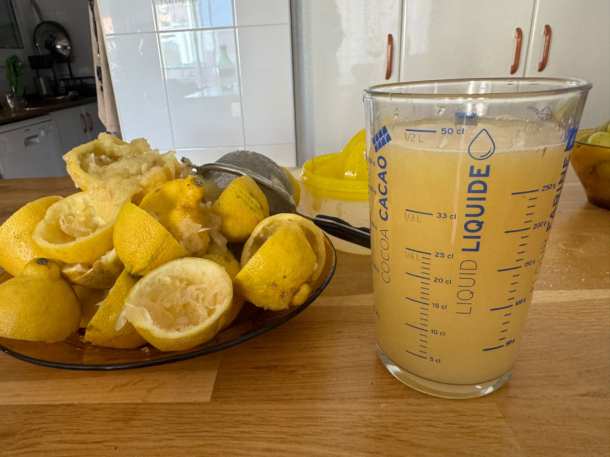
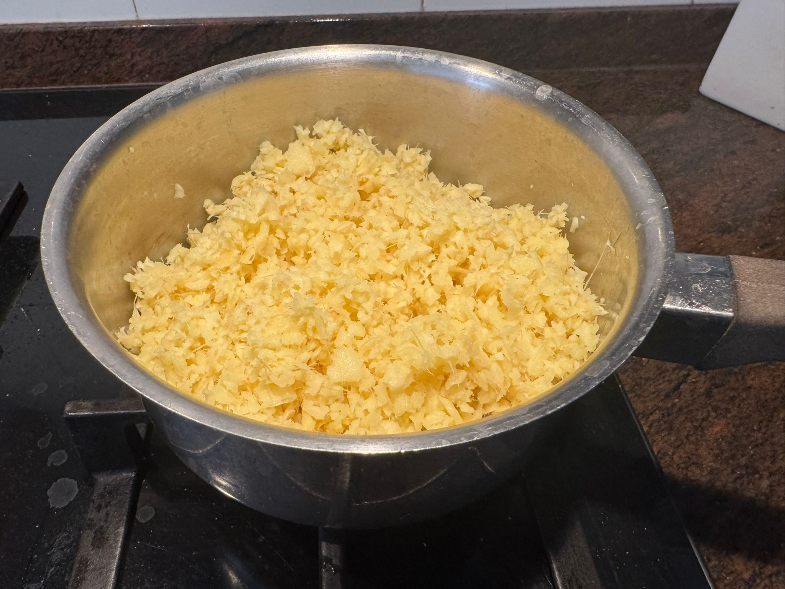

Sirop de citron au gingembre
Ingredients
20×
- 0.5 l de jus de citron
- 300 g de gingembre frais
- 0.5 l d'eau
- 100 g de sucre
Préparation
Étape 1
Exprimer 0.5 l de jus de citron.
Étape 2
Peler et triturer 300 g de gingembre frais, à l’aide d’un mixeur.
Étape 3
Faire bouillir le mélange à feu doux avec 0.5 l d'eau et 100 g de sucre.
Étape 4
Passer le résultat au blender.

